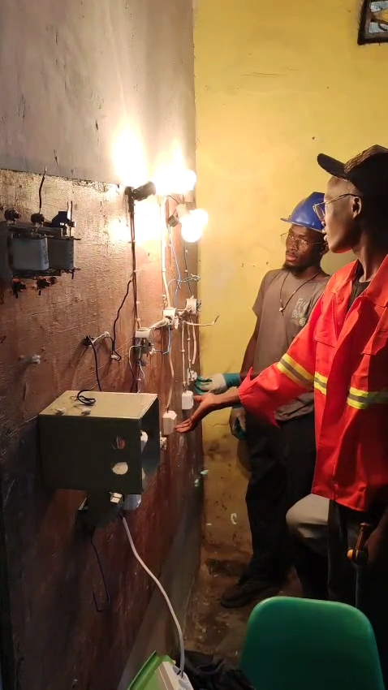
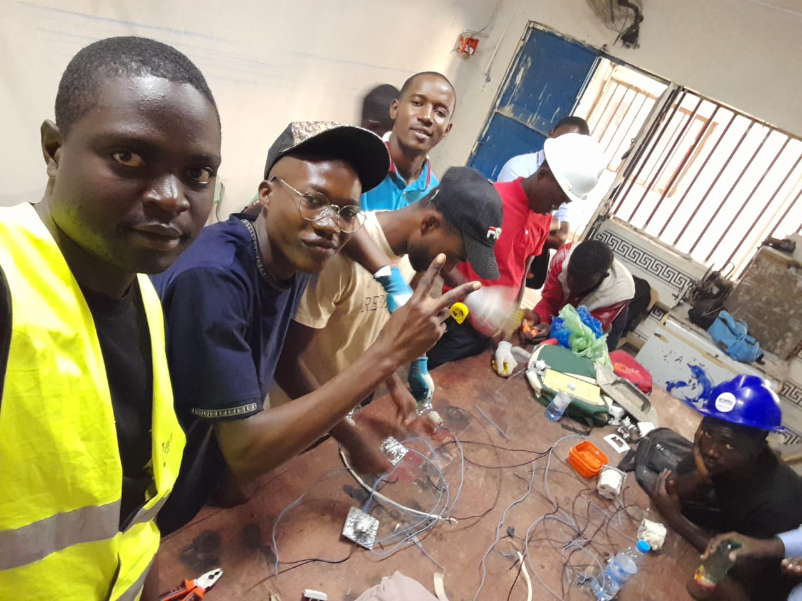
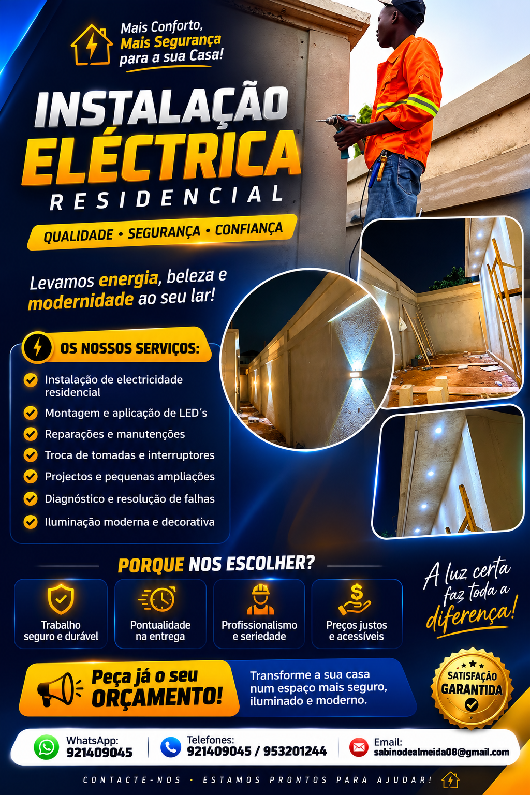
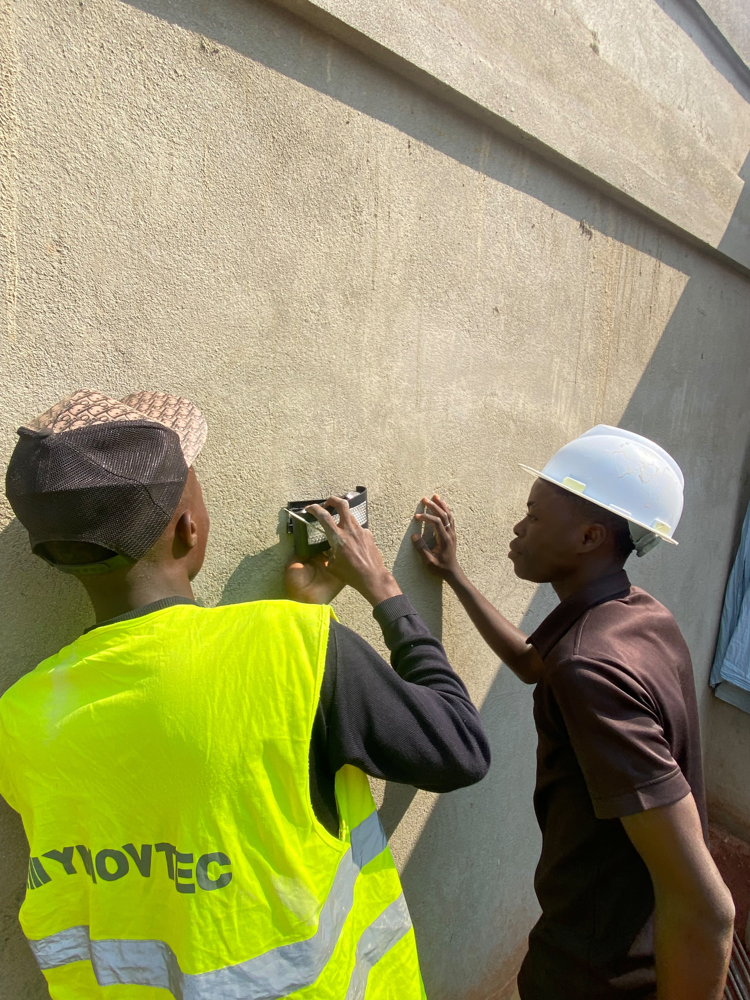
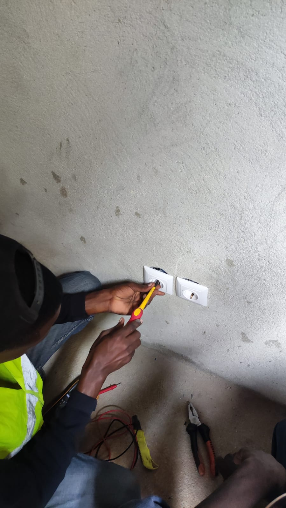
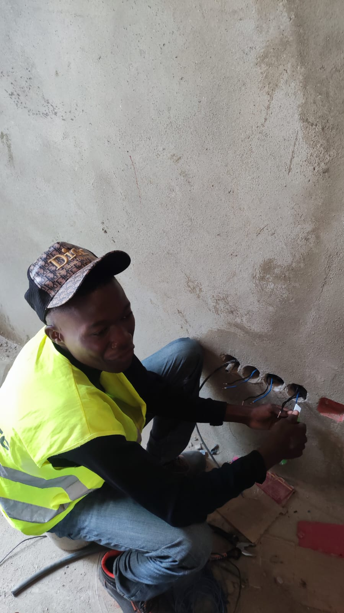
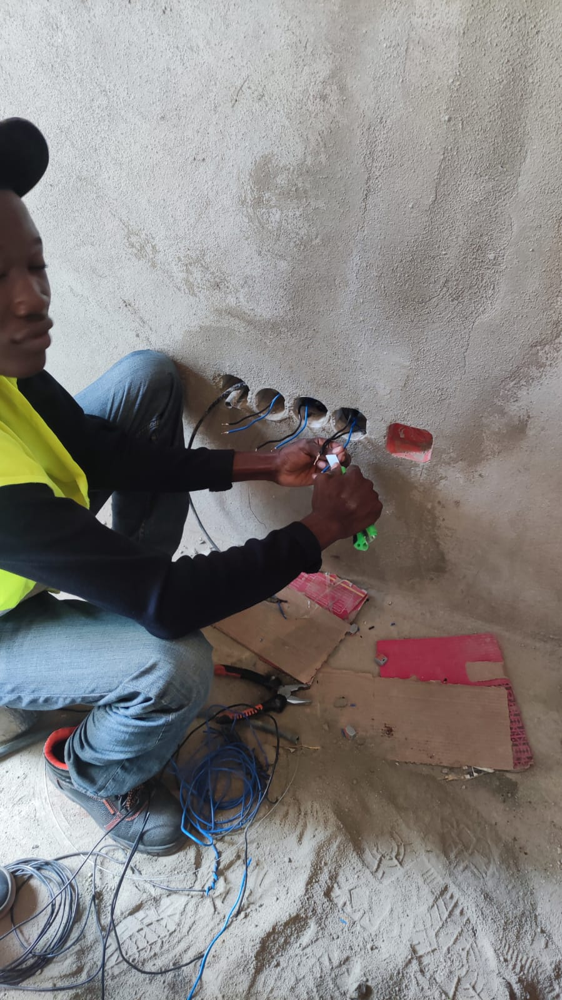
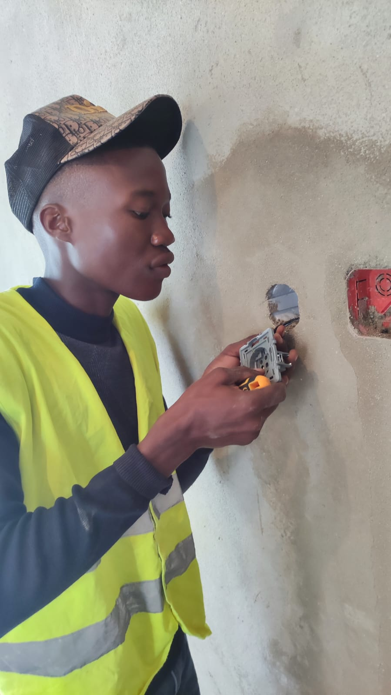

Conheça o percurso académico, as competências técnicas, os projetos e os objetivos profissionais de Sabino De Almeida Donga António.
Biografia profissional
Sabino De Almeida Donga António, conhecido profissionalmente como Sabino De Almeida, é um jovem profissional angolano residente em Luanda, Angola.
Possui formação em Eletricidade de Construção Civil e formação técnica na área de Informática.
O seu percurso técnico inclui conhecimentos em instalações elétricas residenciais e prediais, montagem e manutenção de instalações elétricas, identificação de fase, neutro e terra, montagem de tomadas, interruptores e luminárias.
Na área de Informática, possui conhecimentos em informática geral, sistemas computacionais e Redes de Computadores.
É uma pessoa orientada para a aprendizagem, responsável, disciplinada e interessada em desenvolver continuamente as suas competências técnicas e profissionais.
Direção e desenvolvimento de carreira
O objetivo profissional de Sabino De Almeida é desenvolver uma carreira nas áreas de Eletricidade de Construção Civil, Instalações Elétricas e Informática.
Procura oportunidades como Ajudante de Eletricista, Eletricista de Construção Civil ou Técnico de Instalações Elétricas, onde possa aplicar os conhecimentos adquiridos, desenvolver experiência prática e contribuir com responsabilidade, dedicação e vontade de aprender.
Paralelamente, pretende continuar a desenvolver competências em Informática e Redes de Computadores, construindo uma carreira técnica versátil.
Formação académica e técnica
Formação técnica concluída na área de Eletricidade de Construção Civil.
Formação técnica na área de Informática, incluindo conhecimentos relacionados com sistemas computacionais e redes.
Principais competências técnicas








Projetos académicos e técnicos
Projeto prático relacionado com instalações elétricas, montagem, manutenção e identificação de condutores elétricos.
Projeto académico focado na implementação de uma rede local (LAN), envolvendo planeamento, estruturação e conhecimentos de Redes de Computadores.
Desenvolvimento de conhecimentos técnicos em informática, sistemas computacionais e redes de computadores.
Características e objetivos
Consulte o meu perfil completo